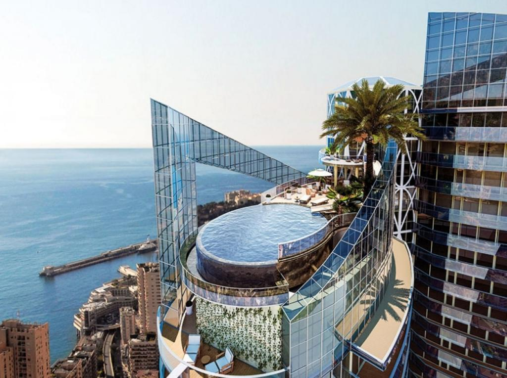

Odeon Tower Penthouse, Monaco
History
- The Odeon Tower (French: Tour Odéon; Monégasque: Turre Odeu̍n) is a double-skyscraper in the Principality of Monaco. It was the first high-rise in the city-state to be built since the 1980s (high constructions had been abandoned due to aesthetic concerns and criticism of overdevelopment).[1] At 170 metres high, Tour Odeon on its completion was the second tallest building on Europe's Mediterranean coast, after Gran Hotel Bali (186m) in Benidorm, Spain. Had Tour Odeon been built in neighboring France, it would have been among that country's 10 highest buildings. This project from Groupe Marzocco was considered by some to be an important renewal of economic development for the second-smallest country in the world. Its construction was launched in the middle of the economic crisis, in 2009. The building was inaugurated in April 2015.